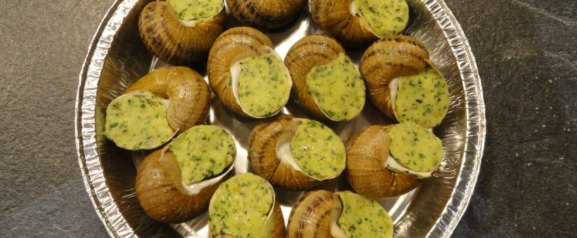

Surgelé
Escargots en coquille
Le grand classique : l'escargot remis dans sa coquille avec une généreuse farce au beurre persillé.
Au four, jusqu'à ce que le beurre grésille.
- 1 douzaineen assiette alu, prête à enfourner8,00 €
- 3 douzainesen sachet21,50 €